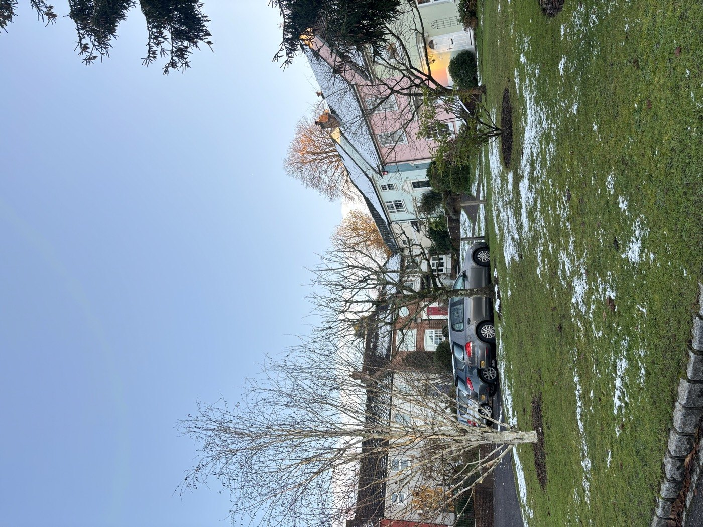

ANTES DE EMBARCAR
Chegada
Preparada
Planeje sua viagem ou mudança com orientações práticas e o inglês que você vai precisar usar desde o começo.
Quero me preparar ↗INGLÊS, CULTURA & VIDA REAL
Aprenda o inglês que se fala por lá, descubra a cultura britânica e prepare-se para viver sua própria história na Inglaterra.
Uma experiência de verdade.
Inspirada em quase 16 anos de vivência na Inglaterra.
YOUR JOURNEY STARTS HERE
Cada história começa de um jeito. Escolha o caminho que faz sentido para o seu momento.
ANTES DE EMBARCAR
Planeje sua viagem ou mudança com orientações práticas e o inglês que você vai precisar usar desde o começo.
Quero me preparar ↗PARA CONVERSAR DE VERDADE
Desenvolva sua conversação, pronúncia e confiança com situações reais e um mergulho na cultura britânica.
Conhecer o inglês britânico ↗PARA COMEÇAR UMA NOVA VIDA
Tenha acompanhamento próximo, em português, para organizar sua chegada e construir sua rotina com mais segurança.
Entender o acompanhamento ↗LET'S TALK, SHALL WE?
Imagine pedir um café, conversar com alguém no mercado ou entender uma resposta rápida no ônibus. Aqui, o inglês ganha contexto, sotaque e significado.
“Could I have…?” é uma forma educada de fazer um pedido.

PRIMEIROS 30 DIAS
Mudar de país é empolgante, mas também pode trazer dúvidas e momentos de solidão. Nos seus primeiros 30 dias, você terá alguém para conversar, organizar os próximos passos e encontrar caminhos para sua nova rotina.
Valor de lançamento R$ 700
Quero saber como funcionaA HISTÓRIA POR TRÁS DA MARCA
Sou Breno, brasileiro, e vivi quase 16 anos em contato com a Inglaterra, sua língua e seu cotidiano. Entre cidades, conversas e descobertas, aprendi que conhecer um lugar vai muito além dos pontos turísticos.
O You Living in UK nasceu para compartilhar essa experiência: o inglês que se ouve na rua, os costumes que fazem parte do dia a dia e o apoio que eu gostaria de oferecer a quem está começando sua própria jornada.
Explore esse universo ↗ PEQUENOS MOMENTOS, GRANDES HISTÓRIAS
PEQUENOS MOMENTOS, GRANDES HISTÓRIASA LITTLE BIT OF BRITAIN
O sotaque, as ruas, os hábitos e os pequenos detalhes que fazem a Inglaterra ser única.

INGLÊS NO DIA A DIA
Da primeira pergunta no ônibus ao pedido no café: aprenda frases para situações que você pode viver.

ALÉM DE LONDRES
Entre cidades, paisagens e costumes, descubra a beleza que está também fora dos roteiros mais conhecidos.
Na Inglaterra, essa pergunta também pode ser uma forma informal de cumprimentar alguém.
Um pequeno detalhe.YOUR STORY STARTS HERE
Quer aprender inglês, preparar sua viagem ou entender como funciona o acompanhamento? Explore os caminhos e escolha o que combina com você.
Conhecer os caminhosCanais de contato e contratação serão adicionados em breve.